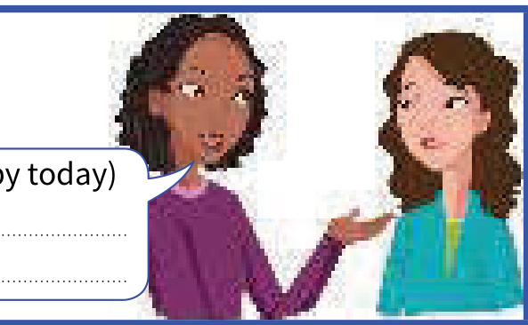
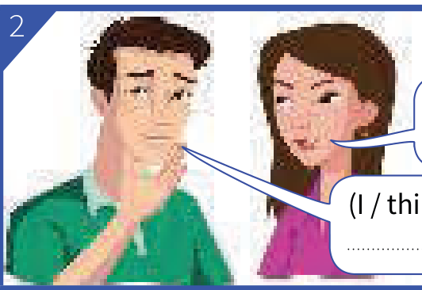
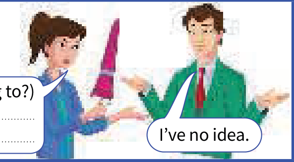
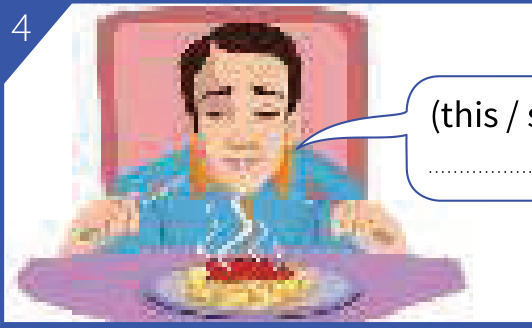
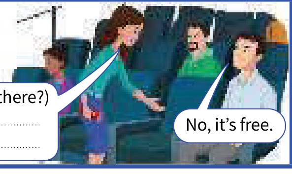
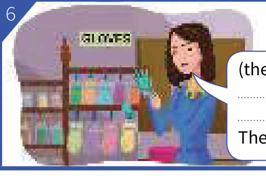

Learning Objectives
- Use continuous forms for actions that have started but not finished
- Know the verbs that are not normally used in the present continuous
- Tell the two meanings of think apart: 'believe' or 'have an opinion', and 'consider'
- Say how somebody is behaving now with am/is/are being
- Use the present simple (not continuous) with see, hear, smell and taste
- Use the present simple or the present continuous with look and feel to say how somebody looks or feels now
Part A — Theory
Actions that have started but not finished
We use continuous forms (I'm waiting, it's raining etc.) for actions and happenings that have started but not finished.
Some verbs (for example, know and like) are not normally used in this way. We don't say 'I am knowing', 'they are liking'. We say 'I know', 'they like'.
The following verbs are not normally used in the present continuous:
I'm hungry. I want something to eat. (not I'm wanting)
Do you understand what I mean?
Anna doesn't seem very happy right now.
think
When think means 'believe' or 'have an opinion', we do not use the continuous:
I think Mary is Canadian, but I'm not sure. (not I'm thinking)
What do you think of my idea? (= what is your opinion?)
When think means 'consider', the continuous is possible:
I'm thinking about what happened. I often think about it.
Nicky is thinking of giving up her job. (= she is considering it)
am/is/are being
You can say he's being … , you're being … etc. to say how somebody is behaving now:
I can't understand why he's being so selfish. He isn't usually like that.
(being selfish = behaving selfishly now)
'The path is icy. Don't slip.'
'Don't worry. I'm being very careful.'
Compare:
He never thinks about other people. He's very selfish. (= he is selfish generally, not only now)
I don't like to take risks. I'm a very careful person.
We use am/is/are being to say how a person is behaving (= doing something they can control) now. It is not usually possible in other situations:
| We say | Not |
|---|---|
Sam is ill. | (not is being ill) |
Are you tired? | (not are you being tired) |
see / hear / smell / taste / look / feel
We normally use the present simple (not continuous) with see/hear/smell/taste:
Do you see that man over there? (not are you seeing)
The room smells. Let's open a window.
This soup doesn't taste very good.
You can use the present simple or continuous to say how somebody looks or feels now:
You look well today. or You're looking well today.
How do you feel now? or How are you feeling now?
but I usually feel tired in the morning. (not I'm usually feeling)
Present continuous and simple 1 ➜ Unit 3
have ➜ Unit 17
Present tenses for the future ➜ Unit 19
Part B — Exercises
Put the verb into the correct form, present continuous or present simple.
Contractions like I'm and full forms like I am are both accepted.
- Are you hungry? (you / want) something to eat?
- Alan says he's 90 years old, but nobody him.
- She told me her name, but it now.
- Don't put the dictionary away. it.
- Don't put the dictionary away. it.
- Air mainly of nitrogen and oxygen.
- Who is that man? What ?
- Who is that man? Why at us?
- Who is that man? him?
- of selling my car. Would you be interested in buying it?
- I can't make up my mind. What I should do?
- Gary wasn't well earlier, but OK now.
Use the words in brackets to make sentences.
Use the present simple or the present continuous. Contractions like don't and full forms like do not are both accepted. The bracketed words are printed in the pictures; picture 1 is the book's worked example.

(you / not / seem / very happy today)

(I / think)
'Are you OK? You look worried.'

(who / this umbrella / belong to?)

(this / smell / good)

(anybody / sit / there?)

(these gloves / not / fit / me)
Are the underlined verbs OK? Correct them where necessary.
Write OK if the underlined verb is correct, or write the correct form if it is not. Item 1 is the book's worked example.
- Nicky is thinking of giving up her job.
- It's not true. I'm not believing it.
- I'm feeling hungry. Is there anything to eat?
- I've never eaten that fruit. What is it tasting like?
- I'm not sure what she does. I think she works in a shop.
- Look over there. What are you seeing?
- You're very quiet. What are you thinking about?
Complete the sentences. Use is/are being (continuous) or is/are (simple).
A short form like she's and a full form like she is are both accepted.
- I can't understand why so selfish. He isn't usually like that.
- You'll like Sophie when you meet her. She very nice.
- Sarah very nice to me at the moment. I wonder why.
- They very happy. They've just got married.
- You're normally very patient, so why so unreasonable about waiting ten more minutes?
- Would you like something to eat? hungry?
Answer Key
Exercise 4.1 — Correct form: continuous or simple
- Are you hungry? Do you want (you / want) something to eat?
- Alan says he's 90 years old, but nobody believes him.
- She told me her name, but I don't remember / I do not remember / I can't remember it now.
- Don't put the dictionary away. I'm using / I am using it.
- Don't put the dictionary away. I need it.
- Air consists mainly of nitrogen and oxygen.
- Who is that man? What does he want?
- Who is that man? Why is he looking at us?
- Who is that man? Do you recognise him?
- I'm thinking / I am thinking of selling my car. Would you be interested in buying it?
- I can't make up my mind. What do you think I should do?
- Gary wasn't well earlier, but he seems OK now.
Exercise 4.2 — Sentences from the pictures
- You don't seem very happy today.
- I'm thinking.
- Who does this umbrella belong to?
- This smells good.
- Is anybody sitting there?
- These gloves don't fit me.
Exercise 4.3 — Are the underlined verbs OK?
- Nicky is thinking of giving up her job. — OK
- It's not true. I'm not believing it. — I don't believe it. / I do not believe it.
- OK (I feel is also correct)
- I've never eaten that fruit. What does it taste like?
- I'm not sure what she does. I think she works in a shop. — OK
- Look over there. What do you see?
- You're very quiet. What are you thinking about? — OK
Exercise 4.4 — is/are being or is/are
- I can't understand why he's being so selfish. He isn't usually like that.
- You'll like Sophie when you meet her. She 's / is very nice.
- Sarah 's being / is being very nice to me at the moment. I wonder why.
- They 're / are very happy. They've just got married.
- You're normally very patient, so why are you being so unreasonable about waiting ten more minutes?
- Would you like something to eat? Are you hungry?
Summary
| Use | Example |
|---|---|
| Continuous forms for actions that have started but not finished | I'm waiting. It's raining. |
| Verbs not normally used in the continuous | I want something to eat. (not I'm wanting) |
| think = believe or have an opinion | I think Mary is Canadian. (not I'm thinking) |
| think = consider (continuous possible) | Nicky is thinking of giving up her job. |
| see / hear / smell / taste: present simple | The room smells. Let's open a window. |
| look / feel now: simple or continuous | You look well today. or You're looking well today. |
| am/is/are being = behaving now | He's being so selfish. He isn't usually like that. |
| Not possible in other situations | Sam is ill. (not is being ill) |